가스기사 (2006-03-05 기출문제)
1과목: 가스유체역학
1. 길이 5m, 내경 5㎝ 인 강관 내를 물이 유속 3m/s로 흐를 때 마찰손실 수두는? (단, 마찰손실계수는 0.03 이다.)
- 1.38m
- 2.62m
- 3.⑤m
- 3.43m
(정답률: 50%)

2. 압축성 흐름 프로세스에서 그림에 대한 설명으로 옳지 않은 것은?
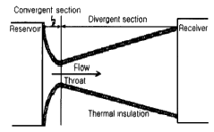
- 등엔트로피 팽창과정이다.
- 이 과정은 면적변화 과정이다.
- 이 과정은 비가역과정이다.
- 정체온도는 도관에서 변하지 않는다.
(정답률: 30%)
3. 펌프의 캐비테이션을 방지할 수 있는 방법이 아닌 것은?
- 펌프의 설치높이를 낮추어 흡입양정을 작게 한다.
- 펌프의 회전수를 낮추어 흡입비교회전도를 작게 한다.
- 양흡입(兩吸入)펌프 또는 두 대 이상의 펌프를 사용한다.
- 흡입배관계는 관경과 굽힘을 가능한 작게 한다.
(정답률: 50%)
4. 절대압력이 2[㎏/cm2]이고, 온도가 25[℃]인 산소의 비중량[N/m3]은? (단, 산소의 기체상수는 260[J/㎏K]이다.)
- 12.8
- 16.4
- 21.4
- 24.8
(정답률: 알수없음)
5. 다음 그림에서와 같이 관속으로 물이 흐르고 있다. A점과 B점에서의 유속은 몇 [m/s]인가? (단, uA : A점에서의 유속, uB : B점에서의 유속)
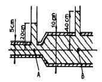
- uA = 2.045, uB = 1.022
- uA = 2.045, uB = 0.511
- uA = 7.919, uB = 1.980
- uA = 3.960, uB = 1.980
(정답률: 알수없음)
6. 25℃ 대기압에서 공기가 평판상을 25m/s 의 속도로 흐를 때, 선단으로부터 2㎝인 곳의 경계층의 두께는 얼마인가? (단, 공기의 동점성계수는 15.68×10-6m2/s 이고, 상수값은 4.65 로 한다.)
- 0.32㎜
- 0.52㎜
- 3.20㎜
- 5.20㎜
(정답률: 알수없음)
7. 압축율(β)과 체적 탄성계수(K)에 대한 표현으로 옳지 않은 것은?
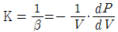
- K = kP (단열변화)
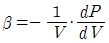
- K = P (등온변화)
(정답률: 50%)
8. 다음 중 정상유동과 관계있는 식은? (단, V = 속도벡터, S = 임의방향좌표, t = 시간 이다.)
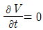
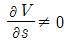
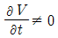
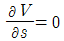
(정답률: 알수없음)
9. 진공 게이지 압력이 0.10[kgf/cm2]이고, 온도가 20℃인 기체가 계기압력 7[kgf/cm2]로 등온 압축되었다. 이 때 최후의 체적비는 얼마인가? (단, 대기압은 720㎜Hg이다.)
- 0.11
- 0.14
- 0.98
- 1.41
(정답률: 알수없음)
10. 간격이 5㎜인 평행한 두 평판 사이에 점성계수 10poise의 피마자기름이 차 있다. 한쪽 판이 다른 판에 대해서 6m/s의 속도로 미끄러질 때 면적 1m2당 받는 힘은 몇 kgf 인가?
- 61.23kgf
- 122.45kgf
- 183.67kgf
- 244.9kgf
(정답률: 28%)
11. 왕복펌프를 다른 형의 펌프와 비교할 때 가장 큰 특징이 되는 것은?
- 펌프효율이 우수 하다.
- 고압을 얻을 수 있고 송수량 가감이 가능하다.
- 동일 유량에 대하여 펌프체적이 적다.
- 저속 운전이므로 공동현상이 다른 펌프에 비해 발생하지 않는다.
(정답률: 55%)
12. 벤튜리관에 대한 설명으로 옳지 않은 것은?
- 유체는 벤튜리관 입구부분에서 속도가 증가하며 압력에너지의 일부가 속도에너지로 바뀐다.
- 실제유체에서는 점성 등에 의한 손실이 발생하므로 유량계수를 사용하여 보정해 준다.
- 유량계수는 벤튜리관의 치수, 형태 및 관내벽의 표면 상태에 따라 달라진다.
- 벤튜리유량계는 확대부의 각도를 20~30°, 수축부의 각도를 6~13°로 하여 압력손실이 적다.
(정답률: 알수없음)
13. 압축 중에 가해지는 열량의 일부가 외부로 방출되는 압축 방식은?
- 등온 압축
- 단열압축
- 폴리트로픽 압축
- 다단 압축
(정답률: 47%)
14. 초음속흐름의 축소-확대 노즐의 축소부분에서 감소하는 것은?
- 마하수
- 압력
- 온도
- 밀도
(정답률: 알수없음)
15. 다음 유체 중 교반을 하면 시간에 따라 동력소모가 큰 유체는 어느 것인가?
- 의가소성(pseudoplastic) 유체
- 뉴턴(Newton) 유체
- 요변성 액체(Thixotropic liquid)
- 레오펙틱 물질(rheopectic substance)
(정답률: 알수없음)
16. 베르누이의 정리에 적용되는 조건이 아닌 것은?
- 정상 상태의 흐름
- 마찰이 없는 흐름
- 직선관에서의 흐름
- 같은 유선상에 있는 흐름
(정답률: 72%)
17. 축류펌프에서 양정을 만드는 힘은?
- 원심력
- 항력
- 양력
- 점성력
(정답률: 60%)
18. 비압축성 유체에 적용되는 관계식을 가장 잘 나타낸 것은? (단, A : 단면적, u : 유속, ρ : 밀도, γ : 비중량)
- γ1A1u1=γ2A2u2
- ρ1A1u1=ρ2A2u2
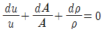
- A1u1=A2u2
(정답률: 50%)
19. 면적이 변하는 도관에서의 흐름에 관한 다음 그림에 대한 설명으로 옳지 않은 것은?
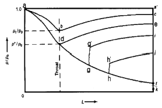
- d점에서의 압력비를 임계압력비라 한다.
- gg' 및 hh' 는 파동(wave motion)과 충격(shock)을 나타낸다.
- 선 ade의 모든 점에서의 흐름은 아음속이다.
- 초음속인 경우 노즐의 확산부의 단면적이 증가하면 속도는 감소한다.
(정답률: 72%)
20. 원관에서 유체의 전이흐름에 대한 설명으로 옳지 않은 것은?
- 층류와 난류사이에서 진동한다.
- 압력강하가 한 값에서 다른 값으로 진동한다.
- 측정이 쉽고, 흐름의 특성이 뚜렷하다.
- Reynolds 수가 2100으로 알려져 있다.
(정답률: 50%)
2과목: 연소공학
21. Diesel cycle의 효율에 관한 사항으로서 맞는 것은? (단, 압축비를 ε, 단절비(cut-off ratio)를 σ라 한다.)
- σ와 ε이 작을수록 효율이 떨어진다.
- σ와 ε이 작을수록 효율이 좋아진다.
- σ가 증가하고 ε이 작을수록 효율이 떨어진다.
- σ가 증가하고 ε이 작을수록 효율이 좋아진다.
(정답률: 42%)
22. 혼합기체 속에서 전기불꽃 등을 이용하여 화염핵을 형성하여 화염을 전파하는 것은?
- 강제점화
- 자연착화
- 최소점화
- 열폭발
(정답률: 73%)
23. 메탄가스 2m3를 완전연소시키는데 필요한 공기량은(m3)? (단, 산소는 공기 중에 20% 함유한다.)
- 5
- 10
- 15
- 20
(정답률: 알수없음)
24. 난류예혼합화염에 대한 설명 중 옳은 것은?
- 화염의 두께가 얇다.
- 연소 속도가 현저하게 늦다.
- 화염의 배후에 다량의 미연소분이 존재한다.
- 층류 예혼합 화염에 비하여 화염의 밝기가 낮다.
(정답률: 알수없음)
25. 단열변화에서 엔트로피 변화량은 어떻게 되는가?
- 일정치 않음
- 증가
- 감소
- 불변
(정답률: 62%)
26. 공연비(A/F)에 대한 정의로 올바른 것은?
- 혼합비 중의 공기와 연료의 질량비이다.
- 혼합기 중의 연료와 공기의 부피비이다.
- 혼합기 중의 연공비와 공기비의 곱이다.
- 공기과잉률이라고 하며 당량비의 역수이다.
(정답률: 47%)
27. 다음 그림은 카르노 사이클(Carnot cycle)의 과정을 도식한 것이다. 열효율 η을 나타내는 식은?
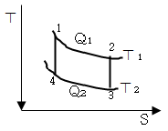
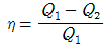
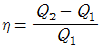
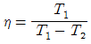
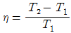
(정답률: 42%)
28. Hℓ(저위발열량)이 9600 ㎉/㎏인 BC유를 공기비 1.2로 연소시킬 때 실제 공기량은 몇 Nm3/㎏인가?
- 8.77Nm3/㎏
- 9.9Nm3/㎏
- 12.62Nm3/㎏
- 14.26Nm3/㎏
(정답률: 알수없음)
29. 에탄(ethane) 2m3을 완전 연소시키려면 공기가 몇 m3가 필요하겠는가? (단, 공기 중에는 산소 : 21Vol.%, 질소 : 79Vol.%가 함유되어 있다.)
- 약 19.0
- 약 28.6
- 약 33.3
- 약 38.1
(정답률: 19%)
30. 20℃, 1atm의 공기 3m3를 1.2atm, 300℃로 하였을 때 차지하는 부피[m3]는? (단, 이상기체라 가정한다.)
- 2.33
- 3.24
- 4.89
- 5.87
(정답률: 50%)
31. 열역학 제2법칙을 잘못 설명한 것은?
- 열은 고온에서 저온으로 흐른다.
- 전체 우주의 엔트로피는 감소하는 법이 없다.
- 일과 열은 전량 상호 변환할 수 있다.
- 외부로 부터 일을 받으면 저온에서 고온으로 열을 이동시킬 수 있다.
(정답률: 알수없음)
32. 1㎾h의 열당량은?
- 376㎉
- 427㎉
- 632.3㎉
- 860.4㎉
(정답률: 58%)
33. 어떤 중유 연소 가열로의 폐가스 조성비가 CO2 : 12.0%, O2 : 8.0%, N2 : 80% 일 때 공기비는 얼마인가?
- 1.3
- 1.4
- 1.5
- 1.6
(정답률: 19%)
34. 가스 혼합물의 분석결과 N2 70%, CO2 15%, O2 11%, CO 4%의 체적비를 얻었다. 이 혼합물은 10kPa, 20℃, 0.2m3인 초기상태로부터 0.1m3으로 실린더 내에서 가역단열 압축할 때 최종 상태의 온도는 약 K 인가? (단, 이 혼합가스의 정적비열은 0.7157 KJ/㎏ ㆍ K이다.)
- 360
- 380
- 400
- 420
(정답률: 58%)
35. 부피조성비가 프로판 70%, 부탄 25%, 프로필렌 5%인 혼합가스에 대한 다음 설명 중 옳은 것은? (단, 공기중에서 가스의 폭발범위는 표에서와 같다.)
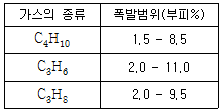
- 폭발하한계는 약 1.62(vol %)이다.
- 폭발하한계는 약 1.97(vol %)이다.
- 폭발상한계는 약 9.29(vol %)이다.
- 폭발상한계는 약 9.78(vol %)이다.
(정답률: 58%)
36. 오토 사이클의 열효율을 나타낸 식은? (단, η : 열효율, r : 압축비, k : 비열비)
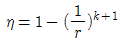
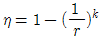
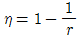
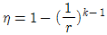
(정답률: 73%)
37. 공기흐름이 난류일 때 가스연료의 연소현상에 대한 설명 중 맞는 것은?
- 연소가 양호하여 화염이 짧아진다.
- 불완전연소에 의한 열효율이 감소한다.
- 화염이 뚜렷하게 나타난다.
- 화염이 길어지면서 완전연소가 일어난다.
(정답률: 50%)
38. 1종 장소와 2종 장소에 적합한 구조로 전기기기를 전폐 구조의 용기 또는 외피 속에 넣고 그 내부에 불활성 가스를 압입하여 내부압력을 유지함으로서 가연성 가스가 용기내부로 유입되지 않도록 한 방폭구조를 의미하는 것은?
- 안정증방폭구조(Increased safety "e")
- 내압방폭구조(Flame proof enclosure "d")
- 유입방폭구조(Oil immersion "o")
- 압력방폭구조(Preessurized apparatus "f")
(정답률: 47%)
39. 연소의 연쇄반응에 해당되지 않는 것은?
- 연쇄개시반응(chain Initiation)
- 연쇄전파반응(chain Propagation)
- 연쇄발화반응(chain Ignition)
- 연쇄종결반응(chain Termination)
(정답률: 34%)
40. 다음 확산화염의 여러 가지 형태 중 대향분류(對向噴流) 확산화염에 해당하는 것은?
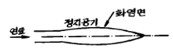
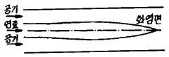
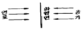
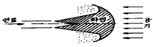
(정답률: 알수없음)
3과목: 가스설비
41. 탄화수소를 원료로 도시가스를 제조하는 공정이 아닌 것은?
- 열분해(thermal cracking process)
- 완전 산화(total oxidation process)
- 접촉 분해(steam reforming process)
- 부분 연소(partial combustion process)
(정답률: 59%)
42. 냉매 R-12를 작동유체로 사용하는 냉동사이클에서 소요에너지가 64.36KJ/㎏, 산출에너지가 104.59KJ/㎏일 경우 이 냉동사이클의 성능계수는 얼마인가?
- 1.357
- 1.625
- 1.497
- 0.615
(정답률: 60%)
43. 다음 중 열분해 오일가스 제조 프로세스가 아닌 것은?
- Hall식
- U.G.I식
- Semet Solvay식
- ONAI-GEGI식
(정답률: 36%)
44. 일정용적의 실린더내에 기체를 흡입한 다음 흡입구를 닫아 기체를 압축하면서 다른 토출구에 압축하는 형식의 압축기는?
- 용적형
- 터보형
- 원심식
- 축류식
(정답률: 67%)
45. 1차 압력 및 부하 유량의 변동에 관계 없이 2차 압력을 일정한 압력으로 유지하는 기능의 가스공급 설비는?
- 가스홀더
- 압송기
- 정압기
- 안전장치
(정답률: 70%)
46. 금속재료의 내산화성을 증가시키기 위해 첨가 원소에 대한 설명으로 틀린 것은?
- Si는 일반적으로 0.03% 이하 첨가 한다.
- Al은 Cr의 보조로서 3% 이하 첨가 한다.
- 카로라이징도 내식성을 증가 시킨다.
- Cr은 Fe - Cr - Ni합금에서 30% 정도까지는 내산화성이 증가하나 40% 이상에서는 감소 한다.
(정답률: 알수없음)
47. 금속재료에 관한 일반적인 설명으로 옳지 않은 것은?
- 황동은 구리와 아연의 합금이다.
- 저온뜨임의 주목적은 내부응력 제거이다.
- 탄소함유량이 0.3% 이하인 강을 저탄소강이라 한다.
- 청동은 내식성은 좋으나 강도가 약하다.
(정답률: 50%)
48. 다음에서 금속재료에 관한 설명으로 옳은 것으로만 짝지어진 것은?
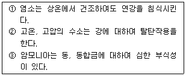
- ①
- ①, ②
- ②, ③
- ①, ②, ③
(정답률: 알수없음)
49. 공기 액화 분리 장치 운전중 반드시 제거해야 할 불순물이 아닌 것은?
- 아세틸렌
- 탄산가스
- 질소
- 질소 산화물
(정답률: 70%)
50. LPG 사용설비에 사용되는 기구들로 이루어진 것은?
- 압력계, 역화방지기, 첵크밸브
- 고압배관, 드레인밸브, 과류방지기
- 가스누설 경보장치, 긴급차단장치, 압력계
- 압력조정기, 중간콕, 호스
(정답률: 50%)
51. 다음 반응과 같은 접촉분해 공정중에서 카본생성을 방지하는 방법으로 옳은 것은?
- 반응온도를 낮게, 압력을 높게
- 반응온도를 높게, 압력을 낮게
- 반응온도를 높게, 압력을 높게
- 반응온도를 낮게, 압력을 낮게
(정답률: 59%)
52. 다음 중 가스의 열량조절방식이 아닌 것은?
- 유량비제어방식
- 캐스캐이드방식
- 통합제어방식
- 전위차방식
(정답률: 19%)
53. 전구용 봉입가스, 금속의 정련 및 열처리의 경우 공기 외의 접촉 방지를 위한 보호가스로 주로 사용되는 가스의 방전과 발광색은?
- 황백색
- 녹자색
- 주황색
- 적색
(정답률: 알수없음)
54. 다음 중 원료 천연가스 중의 수분을 최종적으로 제거할 때 주로 사용하는 것은?
- 실리카겔
- 황산
- 가성소다
- Molecular-sieve
(정답률: 28%)
55. 다음 수소 가스 집합장치의 설계 매니폴드 지관에서 감압밸브는 사용압력이 140㎏f/cm2 인 경우 내압시험 압력은 얼마인가?
- 140㎏f/cm2
- 210㎏f/cm2
- 250㎏f/cm2
- 280㎏f/cm2
(정답률: 67%)
56. 흡입밸브 압력이 6㎏/cm2 abs인 3단 압축기가 있다. 각 단의 토출압력은? (단, 각 단의 압축비는 3 이다.)(오류 신고가 접수된 문제입니다. 반드시 정답과 해설을 확인하시기 바랍니다.)
- 18, 54, 162㎏/cm2
- 17,53, 161㎏/cm2
- 4, 16, 64㎏/cm2
- 3, 15, 63㎏/cm2
(정답률: 20%)
57. 비점이 점차 낮은 냉매를 사용하여 저비점의 기체를 액화하는 사이클을 무엇이라 하는가?
- 캐스케이드식 액화사이클
- 린데식 액화사이클
- 필립스 액화사이클
- 클루우드 액화사이클
(정답률: 50%)
58. 가스용 납사(Naphtha)성분의 구비조건으로 옳지 않은 것은?
- 유황분이 적을 것
- 나프탄계탄화수소가 많을 것
- 카본석출이 적을 것
- 유출온도 종점이 높지 않을 것
(정답률: 72%)
59. LPG를 지상의 탱크로리에서 지상의 저장탱크로 이송하는 방법으로 옳지 않은 것은?
- 위치에너지를 이용한 자연충전방법
- 차압에 의한 충전방법
- 액펌프 이용한 충전방법
- 압축기를 이용한 충전방법
(정답률: 54%)
60. 도시 가스배관의 접합시공방법 중 원칙적으로 규정된 집합 시공방법은?
- 기계적 접합
- 용접접합
- 나사접합
- 플랜지접합
(정답률: 55%)
4과목: 가스안전관리
61. 가압식 LPG탱크에 안전상 없어도 되는 장치는?
- 안전변
- 긴급차단 장치
- 살수장치
- 분석장치
(정답률: 알수없음)
62. 액화석유가스용기(내용적 125L 미만의 것에 한한다.)의 기밀시험방법으로 적합하지 않는 것은?
- 기밀시험은 샘플림검사 한다.
- 기밀시험가스는 공기 또는 질소를 이용한다.
- 용기 1개에 1분이상에 걸쳐서 시험한다.
- 내용적이 50L 미만인 용기는 30초 이상의 시간에 걸쳐서 한다.
(정답률: 알수없음)
63. 프로판가스가 폭발 시 폭발위력 및 격렬함 정도가 가장 크게 될 때 공기와의 혼합농도는?
- 2%
- 4%
- 5%
- 8%
(정답률: 알수없음)
64. 도시가스 사용자 시설에 설치되는 단독사용자 정압기의 분해점검 주기는?
- 6개월에 1회 이상
- 1년에 1회 이상
- 2년에 1회 이상
- 3년에 1회 이상
(정답률: 알수없음)
65. 아세틸렌제조시설에서 고압건조기와 충전용 교체밸브사이의 배관에는 어떤 안전장치를 설치해야 하는가?
- 경보장치
- 긴급차단장치
- 역화방지장치
- 역류방지장치
(정답률: 30%)
66. 액화 산소탱크에 설치할 안전밸브의 작동압력으로 옳은 것은?
- 상용압력 × 0.8배
- 내압시험압력 × 0.8배 이하
- 상용압력 × 1.5배 이하
- 내압시험압력 × 1.5배 이하
(정답률: 알수없음)
67. 탱크차의 내용적이 2000ℓ인 것에 최고 충전압력 2.1MPa로 충전하고자 할 때 탱크차의 최대 적재량은 얼마가 되는가? (단, 충전정수는 2.1MPa에서 2.35 이다.)
- 17871㎏
- 14562㎏
- 11254㎏
- 851㎏
(정답률: 64%)
68. 공기 중 폭발범위가 큰 것에서 작은 순서로 나열된 것은?
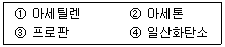
- ① - ④ - ③ - ②
- ① - ④ - ② - ③
- ④ - ② - ① - ③
- ④ - ① - ② - ③
(정답률: 알수없음)
69. 다음 중 독성이 강한 것에서 약한 순서로 나타낸 것은?
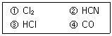
- ① - ③ - ② - ④
- ① - ③ - ④ - ②
- ② - ① - ④ - ③
- ② - ① - ③ - ④
(정답률: 25%)
70. 가스 난방기에서 구비하지 않아도 되는 안전장치는? (단, 납붙임용기 또는 접합용기를 부착하여 사용하는 난방기의 경우에는 그러지 아니하다.)
- 불완전연소방지장치
- 전도안전장치
- 과열방지장치
- 소화안전장치
(정답률: 30%)
71. 다음 가연성 가스이면서 독성가스인 것은?
- 염소
- 불소
- 프로판
- 산화에틸렌
(정답률: 70%)
72. 고압가스 압축기와 충전장소 사이에 설치하는 방호벽을 철근콘크리이트로 할 경우 그 두께는 얼마 이상이어야 하는가?
- 10㎝
- 12㎝
- 15㎝
- 20㎝
(정답률: 알수없음)
73. 초저온용기에 대한 신규검사시 단열성능시험을 실시할 경우 내용적에 대한 침입열량 기준이 바르게 연결된 것은?
- 내용적 500ℓ이상 - 0.002㎉/h ㆍ ℃ ㆍ ℓ
- 내용적 1,000ℓ이상 - 0.002㎉/h ㆍ ℃ ㆍ ℓ
- 내용적 1,500ℓ이상 - 0.003㎉/h ㆍ ℃ ㆍ ℓ
- 내용적 2,000ℓ이상 - 0.0⑤㎉/h ㆍ ℃ ㆍ ℓ
(정답률: 31%)
74. 액화섬유가스용 차량에 고정된 탱크의 폭발을 방지하기 위하여 탱크 내벽에 설치하는 장치로서 가장 적절한 것은?
- 다공성 벌집형 알루미늄합금박판
- 다공성 벌집형 아연합금박판
- 다공성 봉형 알루미늄합금박판
- 다공성 봉형 아연합금박판
(정답률: 알수없음)
75. 한국가스안전공사가 가스로 인한 사고예방 그 밖에 가스 안전을 위하여 필요하다고 인정하는 때에는 수시검사를 실시 할 수 있다. 다음 중 수시검사 항목이 아닌 것은?
- 안전밸브의 유지 및 관리상태
- 강제통풍시설의 유지 및 관리상태
- 배관 등이 가스누출여부
- 안전관리규정 준수여부의 확인 등
(정답률: 60%)
76. 소형저장 탱크에 액화석유가스를 충전하는 때에는 액화가스의 용량이 상용온도에서 그 저장탱크 내용적의 몇 %를 넘지 않아야 하는가?
- 75%
- 80%
- 85%
- 90%
(정답률: 60%)
77. 저장소라 함은 일정량 이상의 고압가스를 용기 또는 저장 탱크에 의하여 저장하는 일정한 장소를 말한다. 다음의 액화가스가 2톤의 저장탱크에 각각 저장되었을 경우 고압가스안전관리법에 의한 저장소에 해당되지 않는 것은?
- 암모니아(NH3)
- 시안화수소(HCN)
- 산화에틸렌(C2H4O)
- 아세트알데히드(CH3CHO)
(정답률: 28%)
78. 아세틸렌을 용기에 충전하는 때의 충전중의 압력은 얼마 이하로 하고, 충전후에는 압력이 몇 ℃에서 몇 Mpa 이하가 되도록 정치해야 하는가?
- 2.7Mpa, 11℃에서 2.5Mpa
- 2.6Mpa, 14℃에서 1.5Mpa
- 2.5Mpa, 15℃에서 1.5Mpa
- 2.5Mpa, 35℃에서 1.5Mpa
(정답률: 알수없음)
79. 액화석유가스 소형저장탱크의 충전질량과 가스 충전구로부터 토지경계선에 대한 수평거리가 맞는 것은?
- 1.000㎏미만 : 0.2m이상
- 1,000㎏이상 ~ 2,000㎏미만 : 0.5m이상
- 2,000㎏이상 ~ 3,000㎏미만 : 2m이상
- 3,000㎏이상 : 5.5m이상
(정답률: 27%)
80. 초저온용기에 대한 정의를 바르게 나타낸 것은?
- 영하 50℃이하의 액화가스를 충전하기 위한 용기로서 단열재로 피복하여 용기내의 가스온도가 상용의 온도를 초과하지 않도록 한 용기.
- 액화가스를 충전하기 위한 용기로서 단열재로 피복하여 용기내의 가스온도가 상용의 온도를 초과하지 않도록 한 용기
- 대기압에서 비점이 0℃이하인 가스를 상용압력이 0.1MPa 이하의 액체상태로 저장하기 위한 용기로서 단열재로 피복하여 가스온도가 상용의 온도를 초과하지 않도록 한 용기
- 액화가스를 냉동설비로 냉각하여 용기내의 가스의 온도가 영하 70℃이하로 유지하도록 한 용기
(정답률: 46%)
5과목: 가스계측기기
81. 액주식 압력계의 구비조건 및 취급시 주의 사항으로 가장 옳은 것은?
- 온도에 따른 액체의 밀도변화를 크게 해야 한다.
- 모세관현상에 의한 액주의 변화가 없도록 해야 한다.
- 순수한 액체를 사용하지 않아도 된다.
- 점도를 크게 하여 사용하는 것이 안전하다.
(정답률: 알수없음)
82. 막식 가스미터의 부동현상에 대하여 바르게 설명한 것은?
- 가스가 누설되고 있는 고장
- 가스가 미터를 통과하지 못하는 고장
- 가스가 통과될 때 미터가 이상 음을 내는 고장
- 가스가 미터를 통과하지만 지침이 움직이지 않는 고장
(정답률: 73%)
83. 제어량의 값이 목표값과 달라지게 하는 외부로부터의 영향을 무엇이라 하는가?
- 상승시간
- 외란
- 설정점
- 제어점
(정답률: 50%)
84. 루츠미터와 습식가스미터 특징 중 루츠미터의 특징에 해당되는 것은?
- 유량이 정확하다.
- 사용중에 수위조정 등의 관리가 필요하다.
- 실험실용으로 적합하다.
- 설치 공간이 적게 필요하다.
(정답률: 40%)
85. 수은을 넣은 차압계를 이용한 액면계에서 수은의 높이가 40㎜라면 상부의 압력취출구에서 탱크내 액면까지의 높이는? (단, 액의 비중량은 998㎏f/m3, 수은의 비중 13.55)
- 5.4㎜
- 54㎜
- 50.3㎜
- 503㎜
(정답률: 28%)
86. 다음 온도계와 사용가능온도 측정범위가 잘못된 것은?
- 수은온도계 : -35 ~ 350℃
- 바이메탈온도계 : -50 ~ 500℃
- 방사온도계 : 50 ~ 3000℃
- 광고온도계 : 100 ~ 3000℃
(정답률: 알수없음)
87. 가스분석에 있어서 CO2 가스 흡수제로 가장 많이 사용하는 약품은?
- 피로가롤용액
- 수산화나트륨용액
- 수산화칼륨용액
- 암모니아성 영화제1구리용액
(정답률: 46%)
88. 발열량 11,000㎉/m3 이고 가스비중이 0.87인 도시가스의 웨베지수는?
- 12,644
- 11,793
- 9,570
- 13,000
(정답률: 알수없음)
89. 격막식 압력계로 압력을 측정하기에 적당한 대상이 아닌 것은?
- 점도가 큰 액체
- 온도가 높은 액체
- 부식성 기체
- 고체부유물이 있는 액체
(정답률: 알수없음)
90. 가스크로마토그래피의 장치구성요소에 속하지 않는 것은?
- 분리관(칼럼)
- 검출기
- 광원
- 기록계
(정답률: 69%)
91. 두 금속의 열팽창 계수 차이를 이용한 온도계는?
- 더미스터 온도계
- 베크만 온도계
- 바이메탈 온도계
- 광고온 온도계
(정답률: 40%)
92. 가스보일러의 자동연소제어에서 조작량에 해당되지 않는 것은?
- 연료량
- 증기압력
- 연소가스량
- 공기량
(정답률: 37%)
93. 가스크로마토그램의 분석 결과 노르말햅탄의 피크높이가 12.0㎝, 반높이선나비가 0.48㎝ 이고 벤젠의 피크높이가 9.0㎝, 반높이선나비가 0.62㎝ 였다면 노르말햅탄의 농도는 얼마인가?
- 49.20 %
- 50.79 %
- 56.47 %
- 77.42 %
(정답률: 58%)
94. 와류 유량계(Vortex Flow meter)의 특성에 해당하지 않는 것은?
- 계량기내에서 와류를 발생시켜 초음파로 측정하여 계량하는 방식
- 구조가 간단하여 설치, 관리가 쉬움
- 유체의 압력이나 밀도에 관계없이 사용이 가능
- 가격이 경제적이나, 압력손실이 큰 단점이 있음
(정답률: 39%)
95. 가스미터의 성능표시 사항에 해당하지 않는 것은?
- 형식승인
- 사용공차
- 감도유량
- 1주기 체적
(정답률: 알수없음)
96. 열전도식 가스 검지기의 특성이 아닌 것은?
- 공기와의 열전도도 차가 작을수록 감도가 좋다.
- 가연성 가스 이외의 가스도 측정할 수 있다.
- 고농동늬 가스를 측정할 수 있다.
- 자기가열도니 서미스터에 가스를 접촉시키는 방식이다.
(정답률: 54%)
97. 다이어프램식 가스미터에 표기된 주기체적의 공칭값과 실제값과의 차이는 기준조건에서 얼마 이내이어야 하는가?
- 1%
- 2%
- 3%
- 5%
(정답률: 알수없음)
98. 다음 충전물 중 사용 용도가 다른 하나는?
- Dimethyl Sulfolane
- Silicagel
- Active carbon
- Porapak Q
(정답률: 9%)
99. 다음 계장용 문자기호(Tag Number) 및 Symbol에 대한 설명 중 옳지 않은 것은?
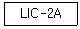
- 전반그룹(LIC)는 계기의 기능을 나타내는 기호로써 두 문자에서 네문자로 구성
- 후반그룹(2A)는 루우프의 구별번호로써 같은 루우프에 설치되어 있는 모든 계기는 같은 번호를 사용한다.
- 첫째 문자(L)는 공정 변화량 또는 동작을 의미한다.
- 둘째, 셋째 문자(IC)는 장치의 형식을 나타낸다.
(정답률: 알수없음)
100. 질소용 mass flow controller를 헬륨에 사용하였다. 예측 가능한 결과는?
- 질량유량에는 변화가 있으나 부피 유량에는 변화가 없다.
- 지시계는 변화가 없으나 부피유량은 증가한다.
- 입구압력을 약간 낮춰주면 동일한 유량을 얻을 수 있다.
- 변화를 예측할 수 없다.
(정답률: 30%)
마찰손실 수두 = 마찰손실계수 × (물의 밀도 × 유속의 제곱 × 파이 × 내경) ÷ (8 × 중력가속도)
여기서 물의 밀도는 1000kg/m³, 파이는 3.14, 중력가속도는 9.81m/s² 이다.
따라서, 마찰손실 수두 = 0.03 × (1000 × 3² × 3.14 × 0.⑤) ÷ (8 × 9.81) = 1.38m
따라서, 정답은 "1.38m" 이다.